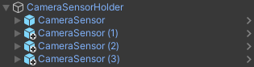
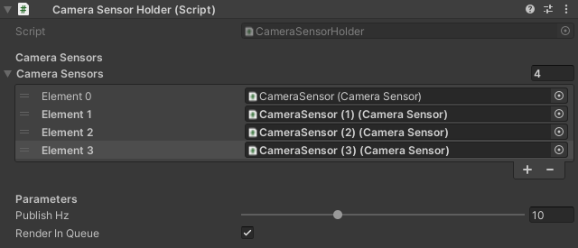

Camera Sensor
The following document describes Unity component used for camera simulation. The CameraSensor component is used for Autoware traffic light recognition.
Prefabs
The component prefab can be found under the following path: Assets\AWSIM\Prefabs\Sensors\CameraSensor.prefab
Scripts
All the most important scripts can be found under the Assets\AWSIM\Prefabs\Sensors\CameraSensor\* path.
The table below describes features contained in each provided script:
| script | feature |
|---|---|
| CameraSensor.cs | Core camera sensor component. It is responsible for applying OpenCV distortion and encoding to bgr8 format. Uses ComputeShader. |
| CameraRos2Publisher.cs | Converts the data output from CameraSensor to ROS2 message and publishes it. |
| CameraSensorHolder.cs | Serves as parent component for the CameraSensor object(s) and controls the rendering sequence of multiple camera sensors. |
Camera Sensor API
The following section describes the API of CameraSensor.cs script.
| API | type | feature |
|---|---|---|
| DoRender | void | Renders the Unity camera, applies OpenCV distortion to rendered image and update output data. |
Camera Sensor Holder
The following section describes Camera Sensor Holder setup.
Scene Object Hierarchy
CameraSensorHolder.cs component allows the sequential rendering of multiple camera sensors. To utilize it, each CameraSensor object should be attached as a child object of the CameraSensorHolder:

Inspector Setup
In CameraSensorHolder script, the following configuration can be changed:
Camere Sensors- a collection of camera sensors used for renderingPublish Hz- the frequency at which camera rendering, image processing and callbacks are executedRender In Queue- camera sensors rendering sequence type: in queue (one after another) or all at the same frame

Output Data
The sensor computation output format is presented below:
| field | type | feature |
|---|---|---|
| ImageDataBuffer | byte[ ] | Buffer with image data. |
| CameraParameters | CameraParameters | Set of the camera parameters. |
Published Topics
The data output is published to the following topics:
| topic | msg | frame_id | hz | QoS |
|---|---|---|---|---|
/sensing/camera/traffic_light/camera_info |
sensor_msgs/CameraInfo |
traffic_light_left_camera/camera_link |
10 |
Best effort, Volatile, Keep last/1 |
/sensing/camera/traffic_light/image_raw |
sensor_msgs/Image |
traffic_light_left_camera/camera_link |
10 |
Best effort, Volatile, Keep last/1 |